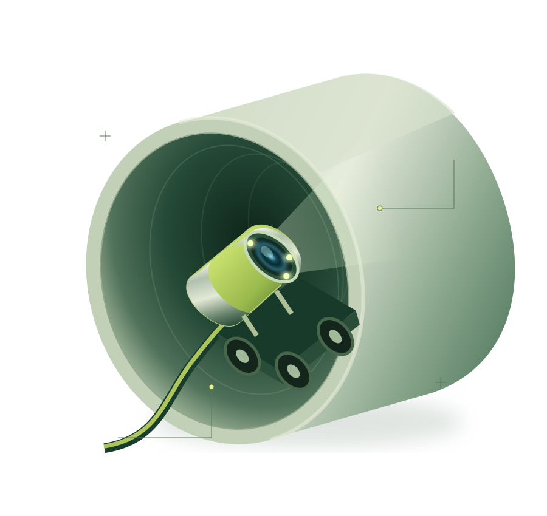

Inspecter
Voir à l’intérieur.
Inspection vidéo
Explorez l’intérieur de votre réseau pour examiner les obstructions, les dommages et les problèmes récurrents.
Discuter de ce serviceVOS CANALISATIONS. NOTRE SPÉCIALITÉ.
Comprenez ce qui se passe sous terre. Inspection de canalisations et réhabilitation sans tranchée, avec une équipe locale à votre écoute.

D’un drain résidentiel à une conduite municipale, nous vous aidons à comprendre le problème et à préparer la suite.
COMMENT NOUS POUVONS VOUS AIDER
Explorez l’intérieur de votre réseau pour examiner les obstructions, les dommages et les problèmes récurrents.
Discuter de ce serviceNettoyage, détartrage et coupe de racines pour traiter les dépôts et les obstructions.
Discuter de ce serviceRenseignez-vous sur le chemisage continu polymérisé en place (CIPP) et son adéquation à votre conduite d’égout.
Discuter de ce serviceRepérez les canalisations et les réseaux souterrains pour préparer votre prochain projet.
Discuter de ce serviceLE MATÉRIEL ADAPTÉ À VOTRE PROJET
Deux systèmes de caméra. Des images précises. Une compréhension concrète des besoins de vos canalisations.
Envoyer un courrielLes rapports numériques réunissent vidéos et recommandations. Le matériel de localisation intégré aide à repérer les problèmes depuis la surface.
La portée des caméras et la faisabilité des réparations dépendent de l’état des conduites et de l’accès au site. Confirmez les besoins avec l’équipe.
VOS SPÉCIALISTES LOCAUX
Fondée à Vernon en 1998, Down Under Pipe Inspection est une entreprise familiale au service des propriétaires, entrepreneurs et municipalités de l’Okanagan. Le propriétaire Mark Tishenko et son équipe privilégient une communication honnête et un travail soigné sur les infrastructures souterraines.
Découvrir Down Under sur FacebookLe CIPP consiste à faire durcir une gaine ou une manchette imprégnée de résine à l’intérieur de la conduite existante. Le chemisage complet et les réparations ponctuelles peuvent limiter les perturbations en surface, notamment pour les jardins et les allées, lorsque la conduite s’y prête. L’équipe peut évaluer la méthode adaptée.
DU PREMIER APPEL À LA PROCHAINE ÉTAPE
Écoulement lent, refoulement récurrent ou projet à venir ? Parlons-en.
Discutez d’une inspection, d’un nettoyage ou d’une localisation pour mieux comprendre.
Explorez les options selon l’état de votre canalisation et les besoins du projet.
FAQ
L’adresse de la propriété, les symptômes observés et les informations sur les inspections ou réparations précédentes faciliteront la discussion.
Le CIPP est une méthode de réhabilitation par chemisage continu polymérisé en place. Appelez pour discuter de son adéquation à votre canalisation.
Oui. Down Under intervient sur des projets résidentiels, commerciaux et municipaux. Contactez l’équipe pour discuter de votre projet et de son emplacement.
Ce site est proposé en anglais et en français. Veuillez appeler pour confirmer les langues disponibles lors de votre rendez-vous.
PARLONS DE VOTRE PROJET
Décrivez-nous la situation. Nous vous aiderons à déterminer par où commencer.
250-938-1213downunderpi@gmail.comLes disponibilités des services et des rendez-vous sont confirmées par téléphone.